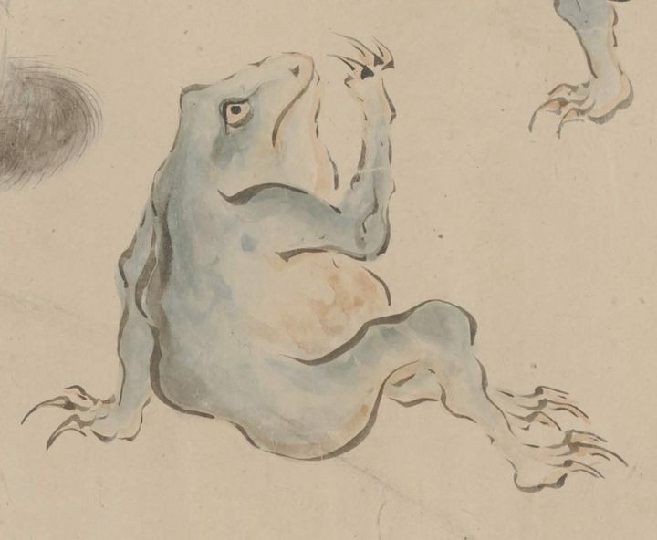

← 图鉴索引

地面に座った青い蛙が、蛙同士の相撲を見物している。右手を口の横まで上げ、左手を地面についている。
出典：親書誌：U426_nichibunken_0435：［妖怪絵巻］／日付：2017／資源識別子：U426_nichibunken_0435_0001_0020
Copyright (c)2010- International Research Center for Japanese Studies, Kyoto, Japan. All rights reserved.